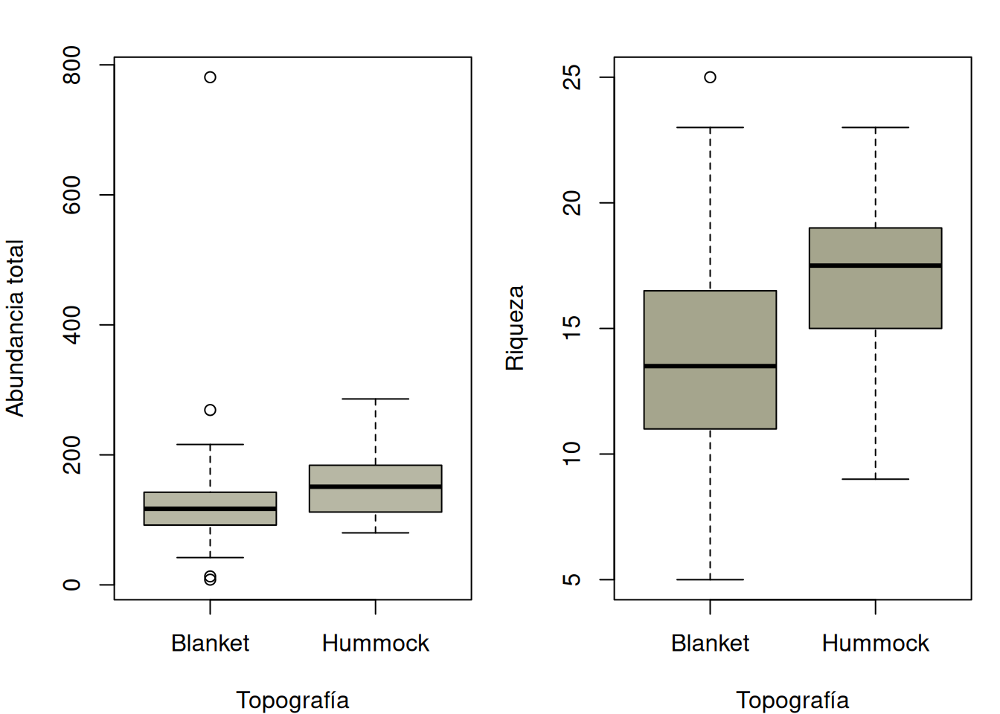
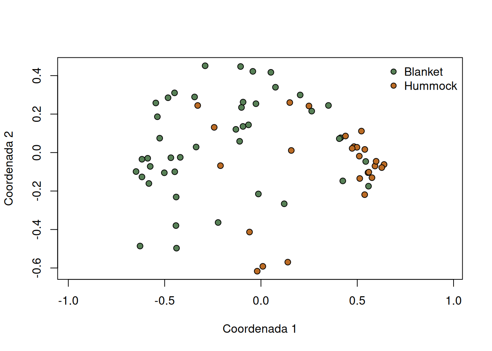

if (!requireNamespace("vegan", quietly = TRUE)) {
stop("Este capítulo requiere el paquete 'vegan'.")
}
data("mite", package = "vegan")
data("mite.env", package = "vegan")
comm <- as.matrix(mite)
env <- mite.env
site_id <- rownames(comm)
audit <- c(
sites = nrow(comm),
taxa = ncol(comm),
duplicated_site_ids = sum(duplicated(site_id)),
missing_counts = sum(is.na(comm)),
negative_counts = sum(comm < 0, na.rm = TRUE),
noninteger_counts = sum(comm != floor(comm), na.rm = TRUE),
empty_sites = sum(rowSums(comm, na.rm = TRUE) == 0),
missing_metadata = sum(is.na(env)),
row_mismatch = as.integer(nrow(comm) != nrow(env))
)
audit
#> sites taxa duplicated_site_ids missing_counts
#> 70 35 0 0
#> negative_counts noninteger_counts empty_sites missing_metadata
#> 0 0 0 0
#> row_mismatch
#> 0
stopifnot(audit[c("duplicated_site_ids", "missing_counts", "negative_counts",
"noninteger_counts", "empty_sites", "missing_metadata",
"row_mismatch")] == 0)12 Proyecto completo de muestreo ecológico
De la pregunta a una comunicación reproducible con datos reales
Un proyecto de muestreo es una cadena de decisiones: la pregunta delimita la población; el marco hace posible seleccionar unidades; el protocolo produce observaciones; el estimador resume la muestra; y la incertidumbre, los diagnósticos y la sensibilidad delimitan la interpretación. Este flujo integra los principios de diseño, trabajo de campo y análisis de Henderson y Southwood (2016), Sutherland (2006), Manly y Navarro Alberto (2015) y Lohr (2022). Ningún análisis posterior repara un marco que excluyó sistemáticamente parte de la población.
12.1 La cadena de inferencia
\[ \text{pregunta}\rightarrow\text{población y marco}\rightarrow \text{selección}\rightarrow\text{observación}\rightarrow \text{estimación}\rightarrow\text{interpretación}. \]
Antes del campo se escriben la respuesta, la población objetivo, el periodo, la unidad de muestreo, el contraste y el estimando. También se separan:
- población objetivo: conjunto sobre el que se desea concluir;
- población accesible: conjunto que puede visitarse;
- marco: lista o mapa desde el cual se selecciona;
- muestra prevista: unidades seleccionadas por el diseño;
- muestra realizada: unidades con observación utilizable.
El diseño determina qué inferencia es defendible. En muestreo aleatorio simple sin reemplazo, la media y su varianza estimada son
\[ \bar y=\frac{1}{n}\sum_{i\in s}y_i,\qquad \widehat{\operatorname{Var}}(\bar y)= \left(1-\frac{n}{N}\right)\frac{s^2}{n}. \]
La corrección finita requiere conocer \(N\). Si la selección no fue probabilística, la fórmula no transforma una muestra conveniente en una muestra representativa (Lohr 2022).
12.2 Plan previo al análisis
Un plan breve y auditable contiene:
- pregunta y estimando;
- población, marco y exclusiones;
- unidad primaria, submuestras y réplicas temporales;
- mecanismo de selección y probabilidades de inclusión;
- protocolo, esfuerzo, instrumentos y reglas para cero y faltante;
- estimador y método de incertidumbre compatibles con el diseño;
- diagnósticos y decisiones de sensibilidad definidos de antemano;
- alcance de la comunicación y archivos necesarios para reproducirla.
En campo, identificadores estables, fechas, coordenadas, observador, esfuerzo, unidades y cambios de protocolo son datos, no notas opcionales (Gregg 2008). Las submuestras mejoran la medición dentro de un sitio, pero no aumentan el número de sitios independientes.
12.3 Aplicación completa con vegan::mite
12.3.1 Pregunta y límites del diseño
vegan::mite contiene conteos de 35 taxones de ácaros oribátidos en 70 sitios; mite.env contiene densidad y contenido de agua del sustrato, tipo de sustrato, arbustos y topografía (Oksanen et al. 2024). La pregunta es:
En los 70 sitios registrados, ¿cuáles son la abundancia total, la riqueza y la diversidad media, y cómo difieren descriptivamente entre topografías
BlanketyHummock?
La fila, no cada ácaro, es la unidad analítica. El estimando primario es la media finita de cada atributo en los 70 sitios observados. Como el objeto no documenta un marco completo, probabilidades de inclusión, fechas, esfuerzo ni selección aleatoria, no se estiman parámetros de todo el humedal ni efectos causales de la topografía. Los intervalos que se mostrarán son intervalos \(t\) descriptivos bajo un modelo de sitios independientes; no son intervalos basados en el diseño.
12.3.2 Importación y auditoría
La auditoría verifica estructura, no autenticidad de campo. Sin hojas originales no puede confirmar coordenadas, esfuerzo, identificación taxonómica ni si un cero es una no detección válida. La correspondencia por posición se acepta solo porque ambos objetos provienen juntos del paquete; datos propios deben enlazarse por una clave explícita.
frame_summary <- data.frame(
item = c("Unidades observadas", "Taxones en columnas", "Blanket", "Hummock",
"Contenido de agua mínimo", "Contenido de agua máximo"),
value = c(nrow(comm), ncol(comm), table(env$Topo)["Blanket"],
table(env$Topo)["Hummock"], min(env$WatrCont), max(env$WatrCont))
)
frame_summary
#> item value
#> 1 Unidades observadas 70.00
#> 2 Taxones en columnas 35.00
#> 3 Blanket 44.00
#> 4 Hummock 26.00
#> 5 Contenido de agua mínimo 134.13
#> 6 Contenido de agua máximo 826.9612.3.3 Construcción de variables
Se conservan los conteos originales y se crea una tabla por sitio. Shannon y Simpson se usan en sus formas clásicas (Henderson y Southwood 2016).
site_data <- data.frame(
site = site_id,
Topo = env$Topo,
WatrCont = env$WatrCont,
SubsDens = env$SubsDens,
total_abundance = rowSums(comm),
richness = vegan::specnumber(comm),
shannon = vegan::diversity(comm, index = "shannon"),
simpson_1_D = vegan::diversity(comm, index = "simpson")
)
site_data$evenness <- with(site_data,
ifelse(richness > 1, shannon / log(richness), NA_real_))
stopifnot(!anyNA(site_data), all(site_data$richness > 1))
site_data[1:8, ]
#> site Topo WatrCont SubsDens total_abundance richness shannon simpson_1_D
#> 1 1 Hummock 350.15 39.18 140 20 2.285775 0.8287755
#> 2 2 Hummock 434.81 54.99 268 23 1.930428 0.7093451
#> 3 3 Hummock 371.72 46.07 186 19 1.995647 0.7412996
#> 4 4 Hummock 360.50 48.19 286 23 2.199309 0.8097462
#> 5 5 Hummock 204.13 23.55 199 19 2.454142 0.8856342
#> 6 6 Hummock 311.55 57.32 209 21 2.557505 0.8958586
#> 7 7 Hummock 378.93 36.95 162 16 2.281889 0.8687700
#> 8 8 Blanket 266.78 80.59 126 21 2.539871 0.8877551
#> evenness
#> 1 0.7630105
#> 2 0.6156696
#> 3 0.6777680
#> 4 0.7014233
#> 5 0.8334836
#> 6 0.8400348
#> 7 0.8230173
#> 8 0.8342430Esta transformación supone que todos los sitios tuvieron esfuerzo comparable y que los conteos son abundancias comparables. La información disponible no basta para comprobar esos supuestos; se mantienen como limitaciones sustantivas.
12.3.4 Estimación e incertidumbre
Para cada respuesta se informa media, desviación estándar, error estándar e intervalo \(t\) del 95 %. Como los 70 sitios constituyen el conjunto descrito, la media es exacta para ese conjunto. El intervalo expresa variación entre sitios bajo una repetición hipotética de sitios independientes y comparables.
mean_ci <- function(x, level = 0.95) {
n <- length(x)
estimate <- mean(x)
se <- sd(x) / sqrt(n)
critical <- qt(1 - (1 - level) / 2, df = n - 1)
c(n = n, estimate = estimate, sd = sd(x), se = se,
lower = estimate - critical * se, upper = estimate + critical * se)
}
responses <- c("total_abundance", "richness", "shannon",
"simpson_1_D", "evenness")
overall_estimates <- t(vapply(site_data[responses], mean_ci, numeric(6)))
round(overall_estimates, 3)
#> n estimate sd se lower upper
#> total_abundance 70 140.000 94.161 11.254 117.548 162.452
#> richness 70 15.114 4.642 0.555 14.007 16.221
#> shannon 70 2.016 0.408 0.049 1.919 2.113
#> simpson_1_D 70 0.794 0.112 0.013 0.767 0.821
#> evenness 70 0.755 0.109 0.013 0.729 0.781La comparación topográfica usa la diferencia de medias \(\Delta=\bar y_{Hummock}-\bar y_{Blanket}\) y el intervalo de Welch, que no obliga a suponer varianzas iguales. Es una descripción asociativa de estos sitios.
difference_ci <- function(y, group) {
x0 <- y[group == "Blanket"]
x1 <- y[group == "Hummock"]
fit <- t.test(x1, x0, var.equal = FALSE)
c(mean_Blanket = mean(x0), mean_Hummock = mean(x1),
difference = unname(diff(rev(fit$estimate))),
lower = fit$conf.int[1], upper = fit$conf.int[2])
}
topography_contrasts <- t(vapply(site_data[responses],
difference_ci, numeric(5), group = site_data$Topo))
round(topography_contrasts, 3)
#> mean_Blanket mean_Hummock difference lower upper
#> total_abundance 131.659 154.115 22.456 -17.083 61.996
#> richness 13.818 17.308 3.490 1.534 5.445
#> shannon 1.926 2.168 0.241 0.075 0.407
#> simpson_1_D 0.775 0.826 0.051 0.006 0.095
#> evenness 0.748 0.766 0.019 -0.028 0.065El orden pasado a t.test() hace que el intervalo corresponda a Hummock menos Blanket. Se comprueba para evitar un error frecuente de signo.
observed_difference <- with(site_data,
mean(richness[Topo == "Hummock"]) - mean(richness[Topo == "Blanket"]))
stopifnot(isTRUE(all.equal(
unname(topography_contrasts["richness", "difference"]),
observed_difference
)))12.3.5 Diagnósticos
Los intervalos de medias son más defendibles si los sitios son independientes, la selección no concentra zonas particulares y unas pocas observaciones no dominan el resumen. Estas condiciones no se diagnostican solo con histogramas; se requiere el mapa y el protocolo. Con lo disponible se revisan asimetría, dispersión por grupo y observaciones influyentes.
diagnostics <- data.frame(
response = responses,
skewness = vapply(site_data[responses], function(x) {
z <- (x - mean(x)) / sd(x)
mean(z^3)
}, numeric(1)),
minimum = vapply(site_data[responses], min, numeric(1)),
maximum = vapply(site_data[responses], max, numeric(1)),
max_abs_standardized = vapply(site_data[responses], function(x)
max(abs((x - mean(x)) / sd(x))), numeric(1))
)
diagnostics[-1] <- lapply(diagnostics[-1], round, digits = 3)
diagnostics
#> response skewness minimum maximum max_abs_standardized
#> total_abundance total_abundance 4.511 8.000 781.000 6.808
#> richness richness -0.195 5.000 25.000 2.179
#> shannon shannon -1.251 0.356 2.655 4.073
#> simpson_1_D simpson_1_D -3.093 0.141 0.911 5.824
#> evenness evenness -1.934 0.199 0.969 5.110op <- par(mfrow = c(1, 2), mar = c(4, 4, 2, 1))
boxplot(total_abundance ~ Topo, data = site_data,
xlab = "Topografía", ylab = "Abundancia total", col = "#b7b7a4")
boxplot(richness ~ Topo, data = site_data,
xlab = "Topografía", ylab = "Riqueza", col = "#a5a58d")
par(op)z_abundance <- with(site_data,
(total_abundance - mean(total_abundance)) / sd(total_abundance))
influential_sites <- site_data[abs(z_abundance) > 2.5,
c("site", "Topo", "WatrCont", "total_abundance", "richness")]
influential_sites
#> site Topo WatrCont total_abundance richness
#> 67 67 Blanket 826.96 781 6Una observación extrema no se elimina por ser extrema. Primero se contrasta con la fuente y el protocolo; si es válida, representa heterogeneidad ecológica que el resultado debe conservar.
12.3.6 Composición como diagnóstico complementario
Bray-Curtis resume diferencias de abundancia y una ordenación clásica permite examinar si unos pocos sitios dominan el patrón. No se realiza un contraste inferencial ni se atribuye la configuración a la topografía.
bray <- vegan::vegdist(comm, method = "bray")
pcoa <- cmdscale(bray, k = 2, eig = TRUE, add = TRUE)
topo_cols <- c(Blanket = "#588157", Hummock = "#bc6c25")
plot(pcoa$points, asp = 1, pch = 21, cex = 1.1,
bg = topo_cols[site_data$Topo],
xlab = "Coordenada 1", ylab = "Coordenada 2")
legend("topright", legend = names(topo_cols), pt.bg = topo_cols,
pch = 21, bty = "n")
La ordenación es descriptiva. Una aparente separación puede reflejar abundancia, contenido de agua, sustrato, cobertura espacial o selección de sitios. Los ejes no identifican cuál explicación es correcta.
12.3.7 Sensibilidad
Se evalúan dos decisiones razonables sin buscar significación: retirar de uno en uno cada sitio para medir influencia sobre la diferencia de riqueza y reducir la dominancia con raíz cuadrada para examinar estabilidad de la ordenación.
leave_one_out_difference <- vapply(seq_len(nrow(site_data)), function(i) {
z <- site_data[-i, ]
with(z, mean(richness[Topo == "Hummock"]) -
mean(richness[Topo == "Blanket"]))
}, numeric(1))
influence_summary <- data.frame(
primary_difference = observed_difference,
minimum_leave_one_out = min(leave_one_out_difference),
maximum_leave_one_out = max(leave_one_out_difference),
most_influential_site = site_data$site[
which.max(abs(leave_one_out_difference - observed_difference))]
)
influence_summary
#> primary_difference minimum_leave_one_out maximum_leave_one_out
#> 1 3.48951 3.261818 3.821818
#> most_influential_site
#> 1 29bray_sqrt <- vegan::vegdist(sqrt(comm), method = "bray")
pcoa_sqrt <- cmdscale(bray_sqrt, k = 2, add = TRUE)$points
ordination_sensitivity <- cor(dist(pcoa$points), dist(pcoa_sqrt))
ordination_sensitivity
#> [1] 0.8576013Una diferencia de riqueza estable al retirar un sitio es menos dependiente de una observación individual, pero continúa limitada por el marco desconocido. Una correlación baja entre configuraciones indicaría que la lectura composicional depende de cuánto pesan los taxones dominantes.
12.3.8 Interpretación y comunicación
Las cifras del texto deben generarse desde los objetos para evitar errores de transcripción.
richness_result <- overall_estimates["richness", ]
richness_contrast <- topography_contrasts["richness", ]
report_text <- sprintf(
paste0("En los 70 sitios observados, la riqueza media fue %.1f especies por ",
"sitio (intervalo t descriptivo del 95%%: %.1f a %.1f). La diferencia ",
"media Hummock menos Blanket fue %.1f especies (%.1f a %.1f)."),
richness_result["estimate"], richness_result["lower"],
richness_result["upper"], richness_contrast["difference"],
richness_contrast["lower"], richness_contrast["upper"]
)
report_text
#> [1] "En los 70 sitios observados, la riqueza media fue 15.1 especies por sitio (intervalo t descriptivo del 95%: 14.0 a 16.2). La diferencia media Hummock menos Blanket fue 3.5 especies (1.5 a 5.4)."Una comunicación completa añade que el marco, la selección, el esfuerzo y la dependencia espacial no están documentados. En consecuencia, el intervalo no cuantifica sesgo de cobertura, detección imperfecta ni error taxonómico; tampoco convierte la asociación topográfica en efecto causal. Magnitud, unidad, incertidumbre, sensibilidad y alcance deben aparecer juntos.
12.3.9 Reproducibilidad
reproducibility_record <- list(
data = c("vegan::mite", "vegan::mite.env"),
package_version = as.character(utils::packageVersion("vegan")),
R_version = R.version.string,
analysis_date = as.character(Sys.Date()),
responses = responses,
contrast = "Hummock - Blanket",
missing_rule = "No convertir faltantes en ceros"
)
reproducibility_record
#> $data
#> [1] "vegan::mite" "vegan::mite.env"
#>
#> $package_version
#> [1] "2.7.5"
#>
#> $R_version
#> [1] "R version 4.5.2 (2025-10-31)"
#>
#> $analysis_date
#> [1] "2026-08-21"
#>
#> $responses
#> [1] "total_abundance" "richness" "shannon" "simpson_1_D"
#> [5] "evenness"
#>
#> $contrast
#> [1] "Hummock - Blanket"
#>
#> $missing_rule
#> [1] "No convertir faltantes en ceros"En un proyecto real, los datos crudos permanecen inmutables, las transformaciones se ejecutan por código, las rutas son relativas, las semillas se fijan cuando hay azar y el diccionario define cada variable y código. Un archivo de sesión o un entorno bloqueado registra versiones. Tablas, figuras y frases numéricas se regeneran desde una sesión limpia.
12.4 Supuestos y limitaciones
- Los 70 sitios y los conteos representan correctamente los registros originales.
- Las filas son sitios independientes; sin coordenadas no puede evaluarse dependencia espacial.
- Método, esfuerzo, periodo y resolución taxonómica son comparables entre sitios.
- Los ceros son no detecciones bajo un protocolo válido, no visitas fallidas.
- Los intervalos \(t\) describen variación bajo sitios comparables, pero no reparan selección no probabilística.
- La topografía no fue asignada; sus contrastes son asociaciones descriptivas.
- Riqueza e índices observados están afectados por detección y esfuerzo.
- La aplicación se limita a los 70 sitios porque el paquete no aporta un marco de muestreo completo.
12.5 Errores comunes
- Formular la pregunta después de buscar el resultado más llamativo.
- Confundir población objetivo, marco y muestra realizada.
- Tratar organismos o submuestras como unidades independientes.
- Reemplazar una unidad inaccesible por la más cercana sin registrar el cambio.
- Convertir faltantes en ceros o borrar extremos sin consultar la fuente.
- Aplicar una fórmula de muestreo aleatorio a una muestra conveniente.
- Informar solo medias sin variación, diagnóstico ni unidad.
- Interpretar un intervalo estrecho como ausencia de sesgo.
- Confundir asociación observacional con efecto de topografía o manejo.
- Ocultar que una conclusión cambia al retirar una unidad o transformar datos.
- Transcribir resultados manualmente y modificar figuras fuera del código.
- Generalizar más allá del marco, periodo, taxones y protocolo observados.
12.6 Síntesis
- Pregunta, población, marco, unidad y estimando deben concordar antes de observar los resultados.
- El mecanismo de selección y la unidad independiente determinan el alcance de la inferencia y de la incertidumbre.
- La auditoría distingue errores estructurales de limitaciones que solo pueden resolverse con metadatos y trabajo de campo.
- Estimación, intervalos, diagnósticos y sensibilidad responden preguntas diferentes y deben comunicarse en conjunto.
- Un análisis reproducible conserva procedencia y genera por código tablas, figuras y texto.
- Con
mitepueden describirse rigurosamente 70 sitios, pero no inventarse un marco probabilístico ni una conclusión causal que los datos no documentan.
12.7 Actividad propuesta para el lector
- Reescriba una pregunta ecológica indicando población, periodo, unidad, contraste y estimando.
- Dibuje la relación entre población objetivo, población accesible, marco, muestra prevista y muestra realizada; anote una fuente de error en cada paso.
- Extienda la auditoría de
mitecon rangos admisibles paraWatrContySubsDens, sin eliminar observaciones automáticamente. - Repita la estimación para Shannon y explique por qué su escala no equivale a número de especies.
- Compare la diferencia de riqueza primaria con todos los resultados de retirar un sitio. Describa estabilidad sin convertirla en una prueba de hipótesis.
- Redacte una conclusión de cuatro frases que separe resultado observado, incertidumbre, limitación del diseño y alcance ecológico.